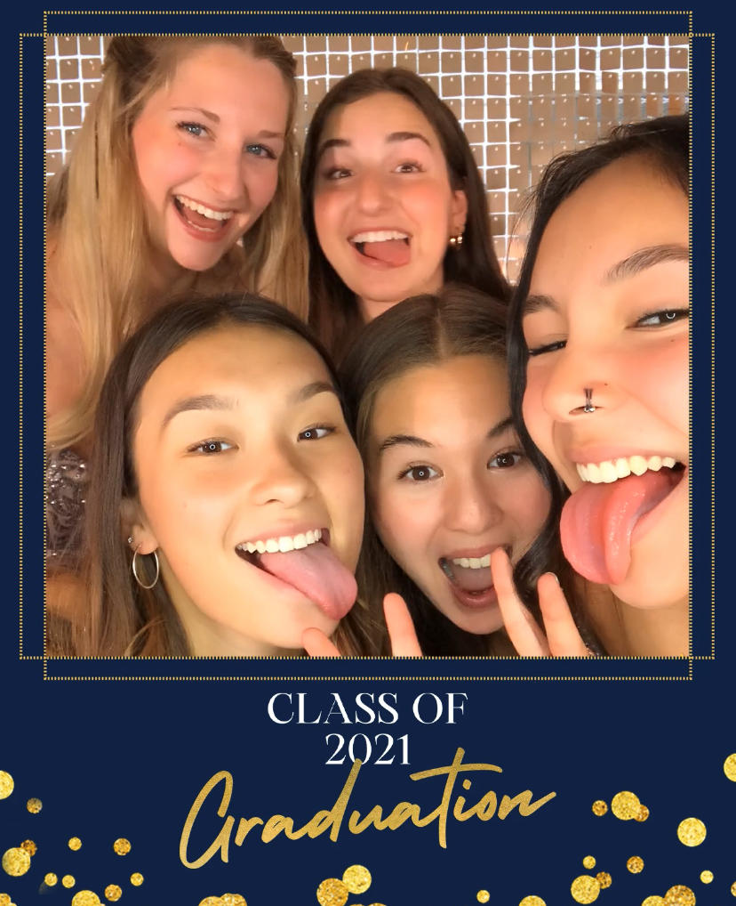
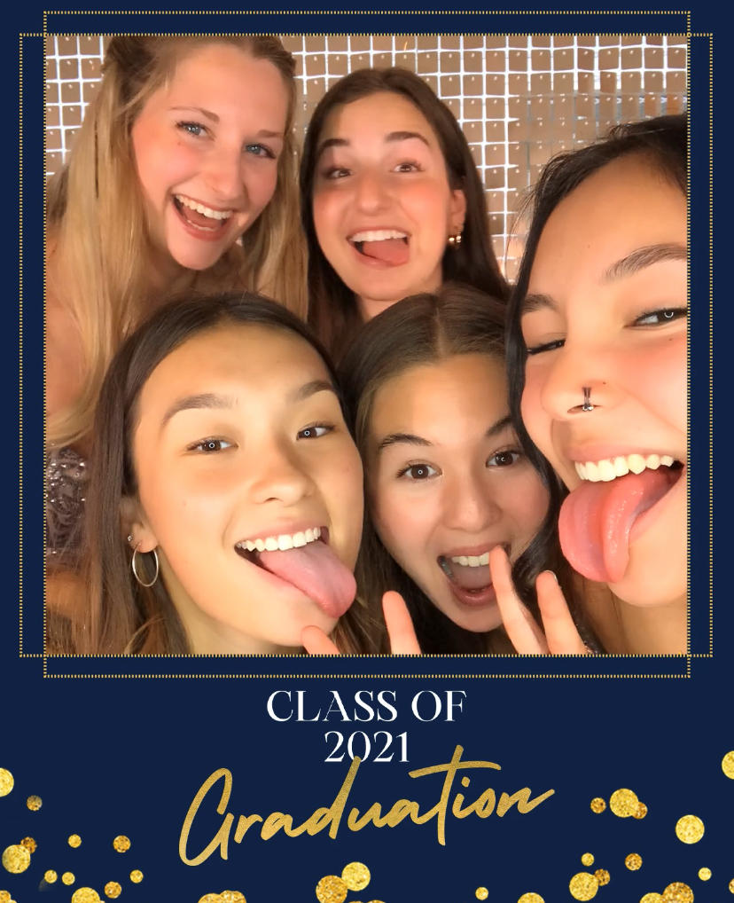

Photo Galleries
"A Typical School Day"

Teachers
I loved many of the teachers I had. Some of them called me by nicknames, "Boz" and "Bozzy". I will never forget Grade 9 Physics. He was one of the most fun teachers I've ever had, and was the first to call me by a nickname. He started calling me "Boz" because I always wrote "Alina Boz" on assignments, never writing out my whole last name.
In class, he did lots of demonstrations and we had lots of fun experiments to do. He had a bunch of toys on his desk, which he threw at students who weren't paying attention. Now don't take that the wrong way, they were all soft and harmless things he was throwing and everyone got a kick out of it. It also helped that most of my friends were in that class that year. This made it even better. We had many funny moments with all the pets he had at the back of the classroom (which is where we sat). He had a bird, which we were allowed to let out once in a while. It flew around the classroom, traumatizing one of my friends that is terrified of birds. But she has a good sense of humour so it was all fun and games. She just hid under a desk while she screamed haha. One time, he even let me take care of his bird when he went away! He had geckos, too, which I loved to hold. They feel so cool! Speaking of cool, there was a huge fish tank by the front of the class. It was filled with lots of crazy looking fish. Sometimes, I would move to the front in the middle of class, both to visit with other friends, AND look at the fish :).
My Grade 11 and 12 Biology teacher was awesome as well. He called me "Bozzy" after hearing it around the school. He has a great sense of humour and everyone looked forward to his classes because they were just so fun and funny. His teaching style was great, and he made everything understandable for me. FUN FACT: I graduated with 100 in Bio! The last two years of school I held my own "classes" at lunch for my friends so I could teach them chemistry and biology. It was fun to play a teacher role. My friends even let me call people up to the white board to get the full effect. There were a few people that I actually helped with their studies, and I'm so glad I could!
Graduation
Our graduation ceremony was held as a Drive-Inn (due to COVID-19) at the Assiniboine Downs Track. We had a grad dinner party at The Gates on Roblin (last picture below). The whole grade (we had 4 full-sized classes) could not be invited because of COVID-19 restrictions. This caused a lot of tension between the student that organized it and the students that were not invited. But there was nothing we could do about it, so she just had to try to apologize for the situation and help them understand that just not everyone could go.
My friends and I went to go take pictures at the Cathedral. We spent the whole day taking pictures there, and at several other locations, and we went out for ice cream and food together after.
 
